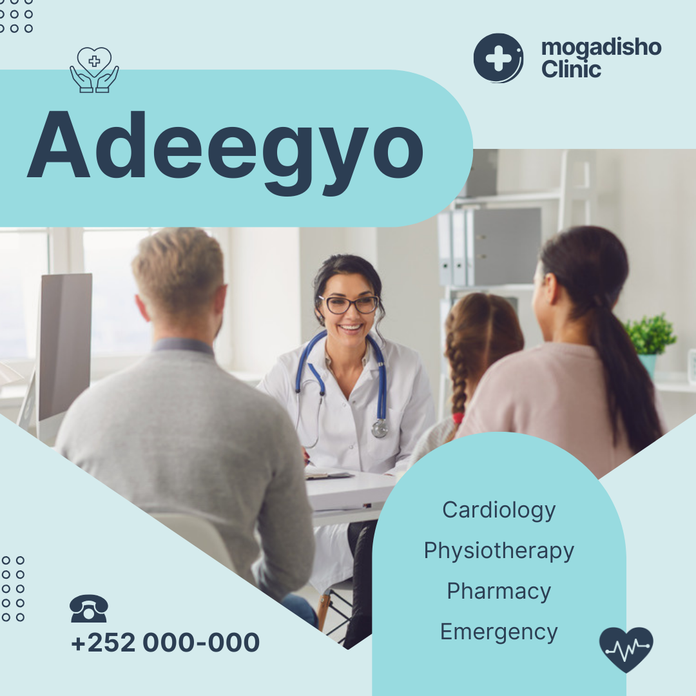

ADEEGYO CAAFIMAAD
.png)
Ku soo dhawoow rugta caafimaadka ee Muqdisho, Goob Caafimaad oo ku kalsoon tahay kaana haqab tireysa Xannuunadaada Caafimaad oo aad oo u heellan bixinta adeegyo caafimaad oo Gaar ah. Xaruntayada casriga ah waxaa ku qalabaysan koox xirfadlayaal caafimaad khibrad leh iyo tignoolajiyada casriga ah si loo hubiyo wanaaga bulshadeena.
Xanuunada Wadnaha
Rugta caafimaadka ee Muqdisho, Waaxdeena wadnaha Qaabilsan waxaa ka go'an in ay bixiso daryeel caafimaad oo dhameystiran. Laga soo bilaabo baadhista caadiga ah ilaa hababka ogaanshaha horumarsan, dhakhaatiirta wadnaha ee xirfada leh ayaa halkan u jooga inay wax ka qabtaan walaacyada la xidhiidha wadnaha oo ay kaa caawiyaan inaad ilaaliso wadne caafimaad qaba.
Xanuunada Haweenka:
.png)
Adeegyada caafimaad ee haweenka waxay xoogga saarayaan baahiyaha caafimaad ee gaarka ah ee haweenka, iyadoo si gaar ah loo tixgelinayo caafimaadka taranka, dhibaatooyinka menopausal, iyo baaritaanno caafimaad oo joogto ah.
Xanuunada Carruurta
.png)
Daryeel caafimaad oo la isku halayn karo ayaa loogu talagalay carruurta dhammaan da’dooda, laga bilaabo dhalashada ilaa koritaanka. Adeegyadaan waxaa ka mid ah tallaalada, daryeelka joogtada ah, iyo baaritaannada caafimaad ee gaar ah.
Xanuunada Maqaarka

Daryeel caafimaad oo ku saabsan xanuunada maqaarka, sida nabarada, cuncunka, finanka, iyo dhibaatooyinka kale ee maqaarka. Adeegyadeena waxay caawiyaan in la hagaajiyo xaaladda maqaarka iyadoo la isticmaalayo tignoolajiyada casriga ah iyo hababka caafimaad ee la isku halayn karo.
Xanuunada Ilkaha

Adeegyo caafimaad oo dhamaystiran oo ku saabsan daryeelka ilkaha, daaweynta ilka burbursan, iyo xoojinta caafimaadka afka. Dhakhaatiirta ilkaha ee khibradda leh ayaa bixiya adeegyada baarista iyo daawaynta, si loo hubiyo caafimaadka ilka iyo afka.
Xanuunada Indhaha

Adeegyada caafimaad ee indhaha waxaa ka mid ah baaritaannada joogtada ah, daawaynta xanuunada indhaha, iyo hababka casriga ah ee ogaanshaha. Waxaan bixinaa adeegyo xoojinta indhaha iyo ka hortagga cudurrada indhaha ee soo ifbaxaya.